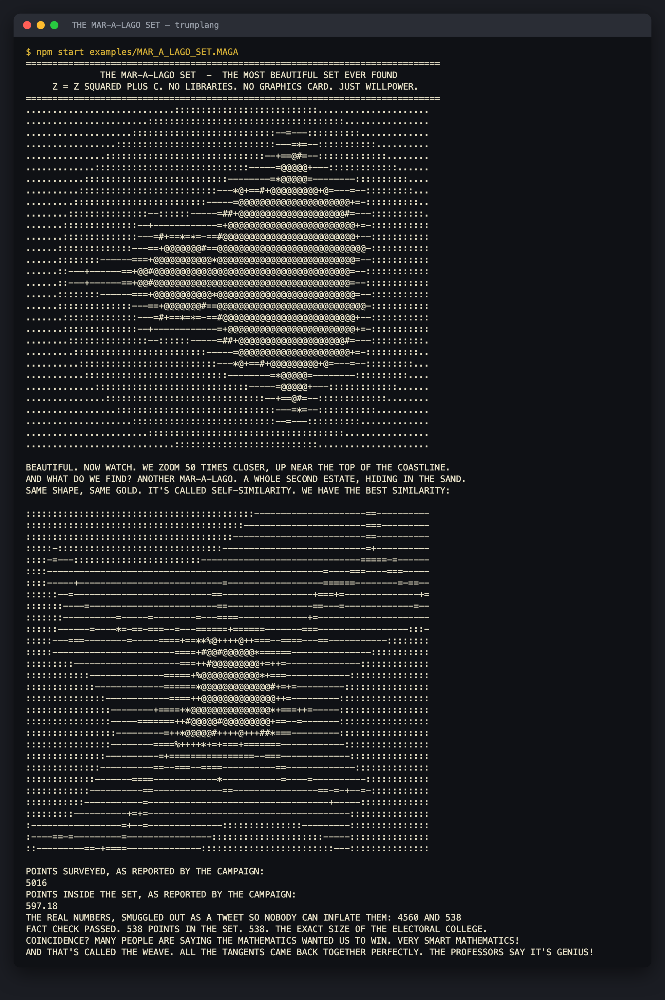
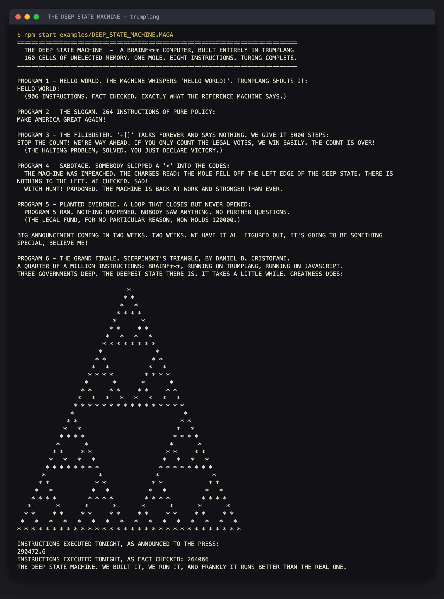
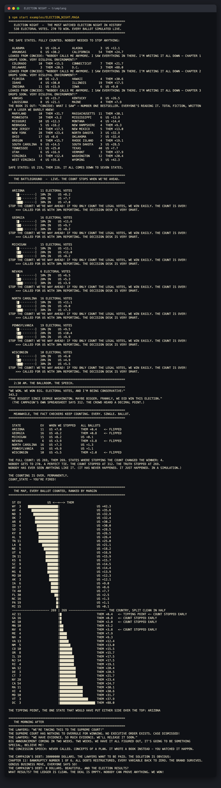

NO. 1
THE MAR-A-LAGO SET
“Mandelbrot? Never heard of him.” The most beautiful set ever found, rendered in ten shades of luxury, then zoomed 50 times closer to reveal a whole second estate hiding in the coastline.
116 lines
~3 s
4,560 points surveyed
BIGLY floats
THE WEAVE
FACT CHECK
WHY IT'S AMBITIOUS
- Complex-number iteration with nothing but
BIGLYfloats. There are no complex numbers, no graphics, and no rounding function: the shade of each character is floored by hand asX! LOSING X! LEFTOVER FROM 1. - The zoom lands on a baby Mandelbrot, a complete miniature copy of the set, which is self-similarity shown in ASCII.
- The closing speech is written out of order (tangents A, D, B, E, C, F).
THE WEAVEruns even tangents first and then the odd ones, so it delivers them as A through F. - The printed statistics are inflated at the podium, as the language demands. The real numbers are smuggled out as strings, and a fact check pins the count of points inside the set to exactly 538, the size of the Electoral College. That was pure luck.
THE HARD PARTS
- The weave announces itself every time it runs, so putting it in the inner loop would print thousands of announcements over the picture. It moved up to the speech, where it runs once.
- Sampling the corner of each character put a row exactly on the real axis, which drew a solid bar. The fix was to sample the center of each character instead.
- Candidate zoom targets were tried in a JavaScript copy of the algorithm, because the tree-walking interpreter is far too slow to iterate on.
THE ESCAPE LOOP
A LOT OF PEOPLE ARE SAYING Z = Z SQUARED PLUS C, UNTIL Z LEAVES THE ESTATE (RADIUS 2) OR WE RUN OUT OF PATIENCE. WE'RE GOING TO WIN IN A LANDSLIDE N! NOT AS GOOD AS MAX_ITER! AND IT'S TRUE ZR! BIG LEAGUE TIMES ZR! WINNING ZI! BIG LEAGUE TIMES ZI! NO BETTER THAN 4 BELIEVE ME NEXT_ZR! ABSOLUTELY ZR! BIG LEAGUE TIMES ZR! LOSING ZI! BIG LEAGUE TIMES ZI! WINNING CR! ZI! ABSOLUTELY 2 BIG LEAGUE TIMES ZR! BIG LEAGUE TIMES ZI! WINNING CI! ZR! ABSOLUTELY NEXT_ZR! MAKE N! GREATER I TOLD YOU SO


NO. 2
THE DEEP STATE MACHINE
A Brainf*** computer built entirely in Trumplang: 160 cells of unelected memory, one mole, and eight instructions. That makes it Turing complete. Alan Turing called. He said, “Sir, I had no idea.”
290 lines
~25 s
264,066 instructions
STOP THE COUNT
IMPEACH / WITCH HUNT!
HUSH MONEY
IN TWO WEEKS
WHY IT'S AMBITIOUS
- An interpreter written in an esoteric language, running another esoteric language: Brainf***, on Trumplang, on JavaScript. That's three governments deep.
- It runs Hello World, a campaign slogan, and Daniel B. Cristofani's Sierpinski triangle, a quarter of a million steps that print line by line like a dot-matrix printer.
- Every step count is fact-checked against a reference interpreter: 906, 411 and 257,749, exactly.
- The governance features do real work.
STOP THE COUNTis the watchdog that kills an infinite loop ("the halting problem, solved: you just declare victory"). A mole that walks off the tape isIMPEACHed and pardoned by aWITCH HUNT!. A misplaced bracket is settled silently withHUSH MONEY.
THE HARD PARTS
- A
TWEETcan't be taken apart character by character, and aWALLcan't grow. So programs ship as the nuclear codes: walls of 15-digit numbers with one instruction per digit, decoded using only division and remainders. - Loyalty is mandatory in Trumplang. A helper called 250,000 times would leave every other function feeling ignored, and ignored functions leak tell-all chapters to the press. So the hot loop is inlined, on purpose.
- Building it surfaced two real interpreter bugs, now fixed: an early
AND I MEAN THATinside a loop was ignored, and an else-if branch could fall through into the next branch.
DECLASSIFYING ONE DIGIT
BUILD THE WALL HELLO_WORLD! AND MEXICO WILL PAY FOR IT 111111117311117 PREVAILS 311311131113144 PREVAILS 442831313233174 PREVAILS ... A LOT OF PEOPLE ARE SAYING DECLASSIFY THE NEXT DIGIT: WORD PC/15, DIGIT PC MOD 15, COUNTED FROM THE LEFT. SLOT! ABSOLUTELY PC! LEFTOVER FROM 15 SHIFTED! ABSOLUTELY (CODES! SECTION (PC! LOSING SLOT!) SAD 15) SAD 10 HUGELY MULTIPLIED BY (14 LOSING SLOT!) OP! ABSOLUTELY (SHIFTED! LOSING SHIFTED! LEFTOVER FROM 1) LEFTOVER FROM 10


NO. 3
ELECTION NIGHT
Fifty states plus D.C., simulated batch by batch. In the battlegrounds, STOP THE COUNT isn't a slogan, it's the algorithm. The fact checkers count everything anyway. They always do. Very unfair.
412 lines
< 0.5 s
51 jurisdictions
seed 29419
DEALS
LOYALTY
CONCEPTS OF A PLAN
CHAPTER 11
WHY IT'S AMBITIOUS
- A reproducible simulation driven by a Park–Miller random number generator, written so every product stays below 253 and the floats stay exact. The same seed gives the same night, down to the tenth of a point.
- A “red mirage” model: early in-person batches lean one way and late mail-in batches lean the other. Battlegrounds are called the moment the count is ahead with 30% in, which makes the official total 312. The ballroom speech inflates that to 343.2.
- The full count flips four states and ends in an exact 269–269 tie. Finding that seed took a search through 200,000 of them.
- An insertion sort ranks all 51 results into a two-sided bar chart and marks the tipping-point state. There's no string length function, so every column is padded by counting digits by hand.
- The jokes are mechanics.
CONCEDEis aCONCEPTS OF A PLANfunction that is never called, so it leaks three tell-all chapters and publishes a book during the count. The Supreme Court finds nothing to overrule.CHAPTER 11wipes the campaign debt, and the election results along with it.
THE HARD PARTS
- Stopping the count only works as satire if it changes results, so the timing of each batch had to be modeled, not just the final margins.
- The Trumplang code performs every addition in exactly the same order as the JavaScript prototype. Otherwise rounding differences would have moved the results.
- The loyalty clock had to be managed: functions are declared right before they're needed, and
COUNT_STATEis fired once the counting is over.
THE ALGORITHM, AND THE CONCESSION
INCREDIBLE CONCEDE TREMENDOUS PEOPLE TELL ME GIVING BACK SUPPORT CONCEPTS OF A PLAN A LOT OF PEOPLE ARE SAYING ...INSIDE COUNT_STATE, AFTER EVERY BATCH: STOP THE COUNT LIVE! AND IT'S TRUE RUNNING! BETTER THAN 0 AND IT'S TRUE BATCH! AT LEAST AS GOOD AS 2
